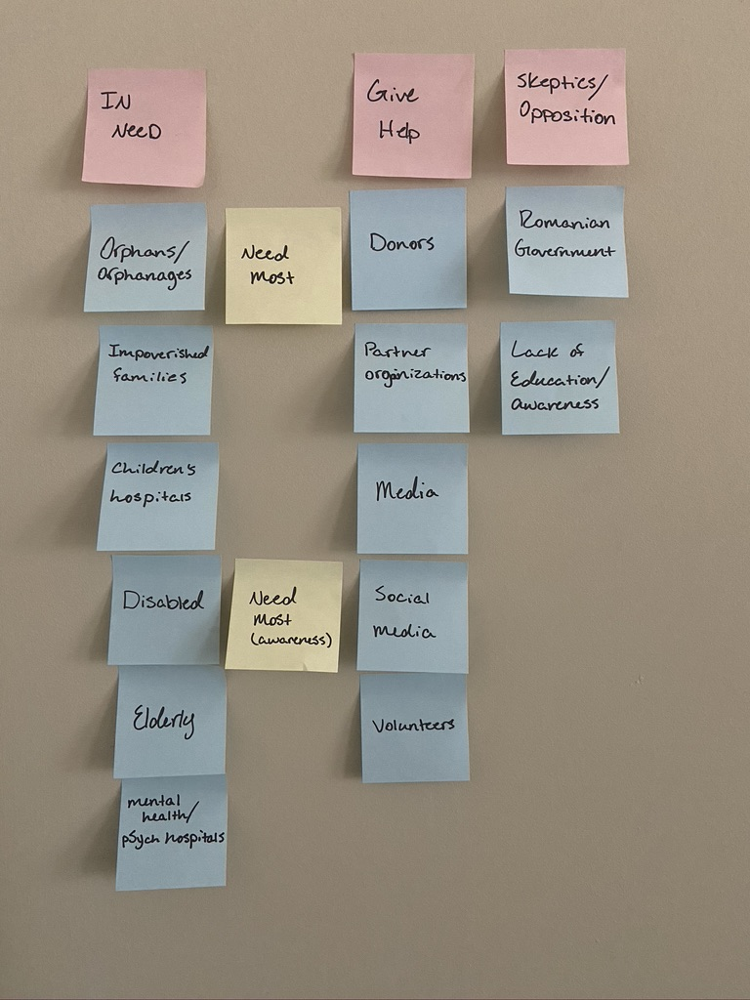

Audience and Goals
After conducting the preliminary research, the target audience and the goals best suited to meet the needs of such groups defined.
Audience
Pinpointing the audience and goals required starting broad and narrowing down to the specifics.
The first step was to list the target groups in need and then list those the site would draw in in order to help. The audience members would most likely be donors of some kind or an orginization looking to partner with us. The Donors would be the most desirable audience followed by those spreading the word by way of social media.
Goals
Overarching Goals
Client
- Bring in Donations
- Educate and raise awareness
- Find and Support Donors
Audience
- Donate
- Be educated
- Share information and message through social media
- volunteer
Website
- Streamline and simplify donation and sponsorship options
- Give clear and necessary information and history
- Organize needs by prority and what makes sense to the audience
- Simplify and organize projects and partnerships
Specific Goals
| User | Goal | Content/Action |
|---|---|---|
| Partner Orginizations | Seek partnerships for similar projects, provide services, direct donations | Contact to become a partner/partners page |
| Churches | Volunteer, spread information, sponsor projects | Volunteer page/button, Sponsor child/family, Donate to projects, volunteer at a pop-up, host a clothing drive |
| Adults | Donate, Sponsor, Be educated/spread info | Information for projects, History page, Sponsor or one time donations, follow on social media. |
| Young Adults | Be informed/spread info, follow social media, volunteer, buy from pop-ups. | Social media links, easy access information, pop-ups page (volunteer/host, donate clothes) |